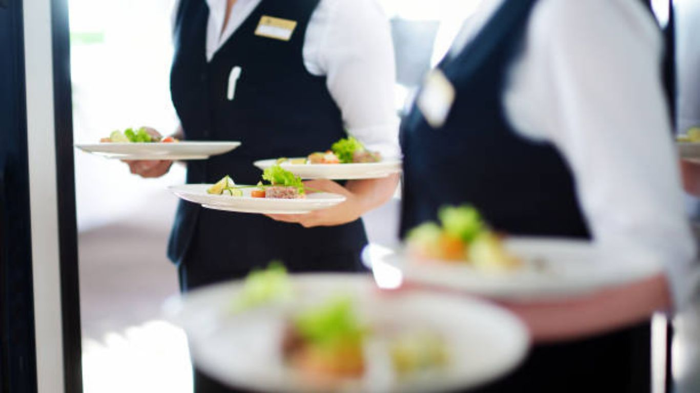
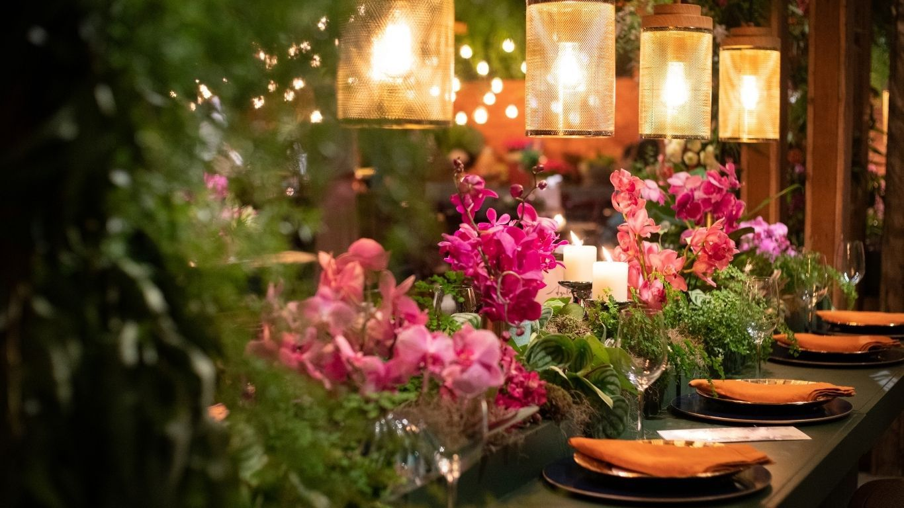
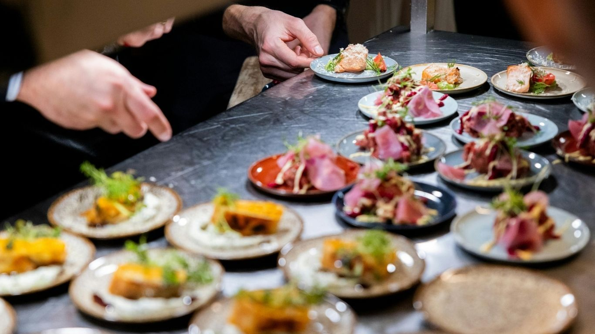
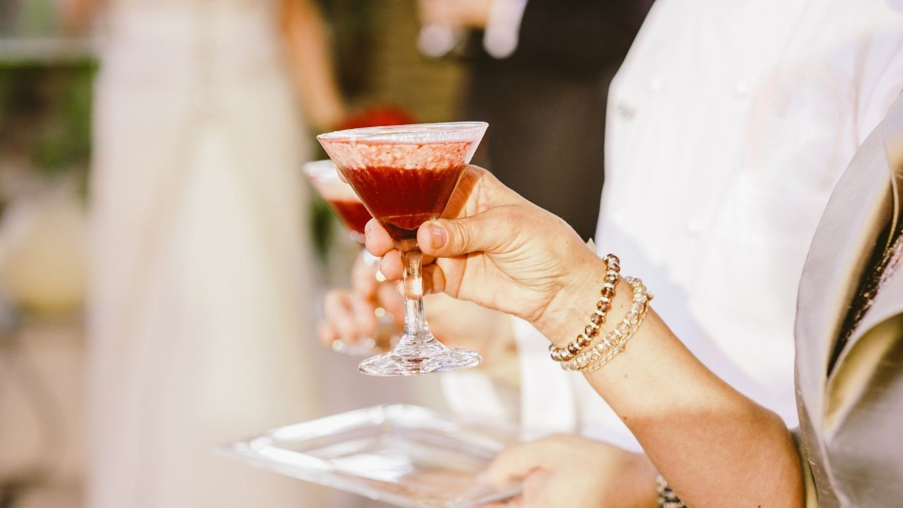
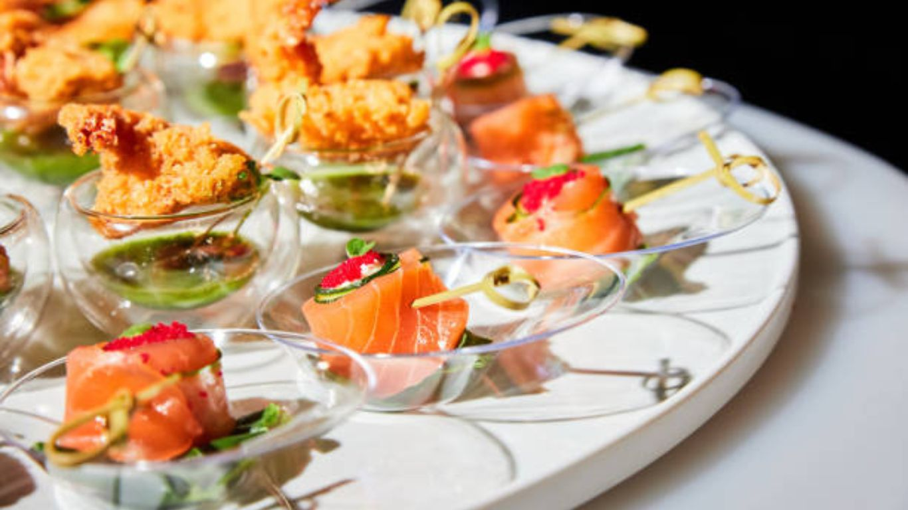
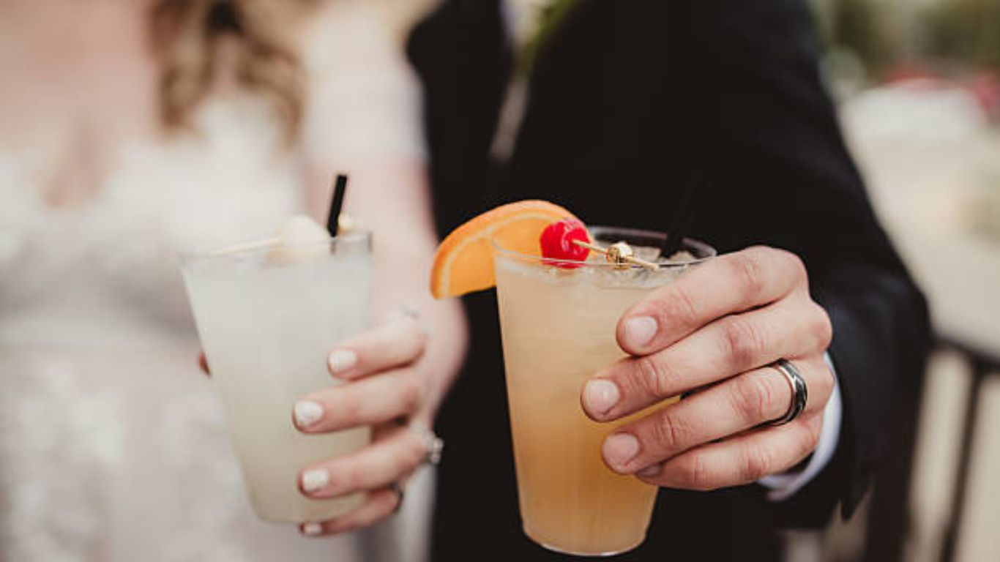

Coordinated Service
A team built around timing, guest comfort and clean transitions.

Planning, service, food and atmosphere designed to feel as polished as the venue looks.
Passed bites, plated courses and late-night details are presented like a restaurant experience, not a banquet afterthought.


Premium spirits, wine, champagne and signature cocktails presented with the same attention to detail as the room.

A team built around timing, guest comfort and clean transitions.

Passed service keeps guests engaged without crowding stations.

Custom drinks, champagne and details that photograph beautifully.